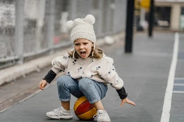

What's so great about playing games?
Everyone likes playing games because they're fun and entertaining, but did you know that playing games actually improves your mental and social health? Most games require concentration, patience, team work, and logic. Read on below to learn more about the many benefits of playing games regularly.
1. It's Fun
Probably one of the most obvious reasons why we do it, it’s fun to play games. All work and no play is a recipe for an unhealthy lifestyle. Playing games allows you challenge yourself, practice certain skills, or simply take a break from the busyness of modern life. This is a great time to recharge.
2. Improve Your Social Skills
In a time dominated by digital screens, face-to-face human interaction may seem to be a thing of the past. The next time you’re at a restaurant, the gym or some other public place take note of how many people are looking at a screen. Group games offer a unique platform that promotes direct socialization in a pressure-free space. This is a great place to catch up with family and friends while strengthening relationships.
4. Promote Critical Thinking
Many games are structured to challenge players. While elements of chance are often built into the framework, many games are geared towards making players think in real-time often with human opponents. Probably one of the most iconic player vs. player strategy game, chess, is simply a continuously evolving critical thinking problem to be solved. The scenarios for strategy games are nearly endless and provide a great way to challenge yourself in a fun and controlled environment. If you like puzzles and challenges, strategy games are a choice.
5. Delay Mental Aging
According to research, card games help to build up the so-called cognitive reserve. This term refers to the knowledge and mental skills that allow you to remain mentally fit in old age if you played card games when you were young! The greater this reserve is, the less age-related damage is caused.
People who have played long before retirement have better cognitive abilities, i.e. the ability to acquire knowledge and use it in real life, such as perceiving stimuli, sense perception, memory, attention, behavioural control and reasoning. Games that require intensive thinking and engagement, such as bridge, are great here. If you know older people who spend time playing this game, you have probably noticed that they think clearly and very logically.
6. Broaden Your Knowledge Base
Using card games can also contribute to broadening knowledge about, for example, different nations or cultures. It also makes it possible to learn new vocabulary - not only in Polish, but also in foreign languages. It is not uncommon for card games to enhance players' maths and science skills. Due to the huge variety of this type of games, they can be selected individually to the player's interests. Card games are also a great opportunity for interesting conversations, e.g. about what is happening in the world. In addition, the biggest fans of games read books on possible strategies, study the game and try to learn new skills from seasoned players.
7. Improved Emotional Management
Playing card games frequently also teaches children how to manage their emotions. This is especially important for children, who need to learn to lose with the class and to win without feeling superior to others. People who play cards often know well that things can be different during games and that they do not grow feathers after beating their opponents. Both of these skills are therefore very important and will certainly also be useful in real life, in contact with peers. Card games also teach composure - players do not become discouraged over time, for example when they lose or are dealt weaker cards. What's more, they then try to create a new game plan that - despite a worse streak - will help them win. And when they receive better cards, they try to make the most of the opportunity given to them.